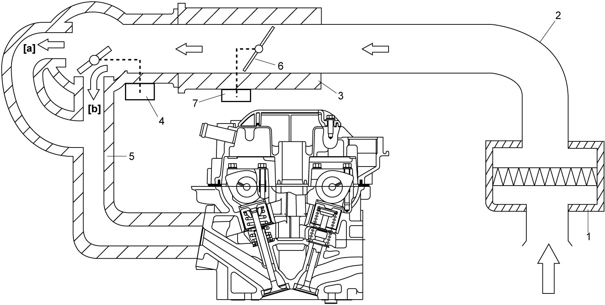

1A
| Air Intake System Description |
The main components of the air intake system are the air cleaner assembly (1), the air cleaner outlet hose (2), the electric throttle body assembly (3) and the intake manifold (5) equipped with the intake manifold tuning (IMT) valve actuator (4).
For the details of the electric throttle assembly, refer to Electric Throttle Control System Description:M16A.
IMT actuator operates the valve to change the intake manifold passage to [a] or [b]. For the details of the operation, refer to IMT System Description:M16A.
The intake air, which the amount varies corresponding to the throttle valve (6) opening and the engine speed, is filtered by the air cleaner, distributed by the intake manifold, and finally drawn into each combustion chamber. The electric throttle body assembly is not equipped with the IAC valve for idle speed control. The idle speed is controlled by the throttle actuator (7) which opens/closes the throttle valve. For the details, refer to Electric Throttle Control System Description:M16A.

 "Expand image")